在前面的例子中，我们都是通过new Thread来创建一个线程，由于线程的创建和销毁都需要消耗一定的CPU资源，所以在高并发下这种创建线程的方式将严重影响代码执行效率。而线程池的作用就是让一个线程执行结束后不马上销毁，继续执行新的任务，这样就节省了不断创建线程和销毁线程的开销。
ThreadPoolExecutor
创建Java线程池最为核心的类为ThreadPoolExecutor：
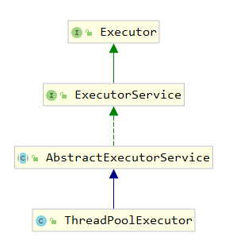
它提供了四种构造函数来创建线程池，其中最为核心的构造函数如下所示：
1 | public ThreadPoolExecutor(int corePoolSize, |
这7个参数的含义如下：
corePoolSize 线程池核心线程数。即线程池中保留的线程个数，即使这些线程是空闲的，也不会被销毁，除非通过ThreadPoolExecutor的
allowCoreThreadTimeOut(true)方法开启了核心线程的超时策略；maximumPoolSize 线程池中允许的最大线程个数；
keepAliveTime 用于设置那些超出核心线程数量的线程的最大等待时间，超过这个时间还没有新任务的话，超出的线程将被销毁；
unit 超时时间单位；
workQueue 线程队列。用于保存通过execute方法提交的，等待被执行的任务；
threadFactory 线程创建工程，即指定怎样创建线程；
handler 拒绝策略。即指定当线程提交的数量超出了maximumPoolSize后，该使用什么策略处理超出的线程。
在通过这个构造方法创建线程池的时候，这几个参数必须满足以下条件，否则将抛出IllegalArgumentException异常：
corePoolSize不能小于0；
keepAliveTime不能小于0；
maximumPoolSize 不能小于等于0；
maximumPoolSize不能小于corePoolSize；
此外，workQueue、threadFactory和handler不能为null，否则将抛出空指针异常。
下面举些例子来深入理解这几个参数的含义。
使用上面的构造方法创建一个线程池：
1 | ThreadPoolExecutor threadPoolExecutor = new ThreadPoolExecutor( |
上面的代码创建了一个核心线程数量为1，允许最大线程数量为2，最大活跃时间为10秒，线程队列长度为1的线程池。
假如我们通过execute方法向线程池提交1个任务，看看结果如何：
1 | ThreadPoolExecutor threadPoolExecutor = new ThreadPoolExecutor( |
ThreadPoolExecutor的execute和submit方法都可以向线程池提交任务，区别是，submit方法能够返回执行结果，返回值类型为Future
sleep方法代码：
1 | private static void sleep(long value) { |
启动程序，控制台输出如下： 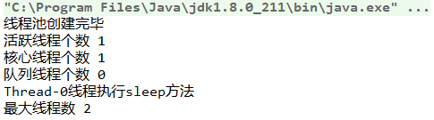
线程池核心线程数量为1，通过execute提交了一个任务后，由于核心线程是空闲的，所以任务被执行了。由于这个任务的逻辑是休眠100秒，所以在这100秒内，线程池的活跃线程数量为1。此外，因为提交的任务被核心线程执行了，所以并没有线程需要被放到线程队列里等待，线程队列长度为0。
假如我们通过execute方法向线程池提交2个任务，看看结果如何：
1 | threadPoolExecutor.execute(() -> sleep(100)); |
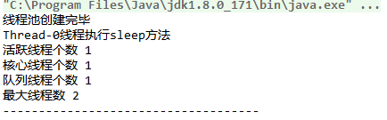
线程池核心线程数量为1，通过execute提交了2个任务后，一开始核心线程是空闲的，Thread-0被执行。由于这个任务的逻辑是休眠100秒，所以在这100秒内，线程池的活跃线程数量为1。因为核心线程数量为1，所以另外一个任务在这100秒内不能被执行，于是被放到线程队列里等待，线程队列长度为1。
假如我们通过execute方法向线程池提交3个任务，看看结果如何：
1 | threadPoolExecutor.execute(() -> sleep(100)); |
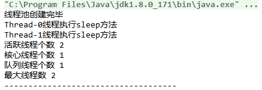
这三个任务都是休眠100秒，所以核心线程池中第一个任务正在被执行，第二个任务被放入到了线程队列。而当第三个任务被提交进来时，线程队列满了（我们定义的长度为1），由于该线程池允许的最大线程数量为2，所以线程池还可以再创建一个线程来执行另外一个任务，于是乎之前在线程队列里的线程被取出执行（FIFO），第三个任务被放入到了线程队列。
改变第二个和第三个任务的睡眠时间，观察输出：
1 | threadPoolExecutor.execute(() -> sleep(100)); |
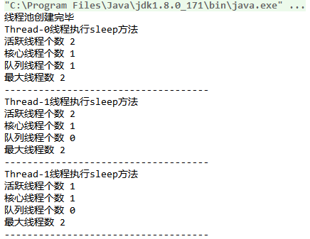
第二个任务提交5秒后，任务执行完毕，所以线程队列里的任务被执行，于是队列线程个数为0，活跃线程数量为2（第一个和第三个任务）。再过5秒后，第三个任务执行完毕，于是活跃线程数量为1（第一个100秒还没执行完毕）。
在第三个任务结束的瞬间，我们观察线程快照:
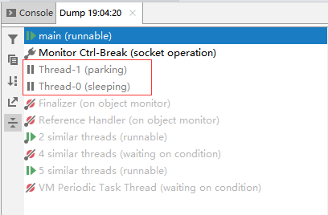
可以看到，线程池中有两个线程，Thread-0在执行第一个任务（休眠100秒，还没结束），Thread-1执行完第三个任务后并没有马上被销毁。过段时间后（10秒钟后）再观察线程快照:
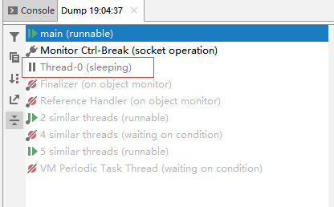
可以看到，Thread-1这个线程被销毁了，因为我们在创建线程池的时候，指定keepAliveTime 为10秒，10秒后，超出核心线程池线程外的那些线程将被销毁。
假如一次性提交4个任务，看看会怎样：
1 | threadPoolExecutor.execute(() -> sleep(100)); |
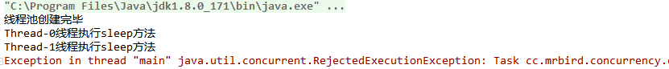
因为我们设置的拒绝策略为AbortPolicy，所以最后提交的那个任务直接被拒绝了。更多拒绝策略下面会介绍到。
关闭线程池
线程池包含以下几个状态：
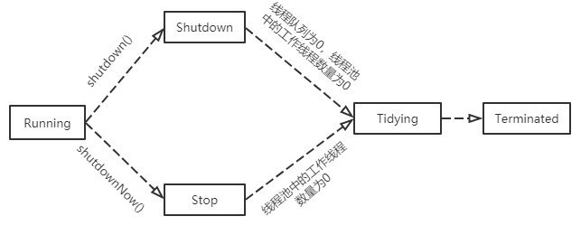
当线程池中所有任务都处理完毕后，线程并不会自己关闭。我们可以通过调用shutdown和shutdownNow方法来关闭线程池。两者的区别在于：
shutdown方法将线程池置为shutdown状态，拒绝新的任务提交，但线程池并不会马上关闭，而是等待所有正在折行的和线程队列里的任务都执行完毕后，线程池才会被关闭。所以这个方法是平滑的关闭线程池。shutdownNow方法将线程池置为stop状态，拒绝新的任务提交，中断正在执行的那些任务，并且清除线程队列里的任务并返回。所以这个方法是比较“暴力”的。
举两个例子观察下两者的区别：
shutdown例子:
1 | public static void main(String[] args) { |
启动程序，控制台输出如下：
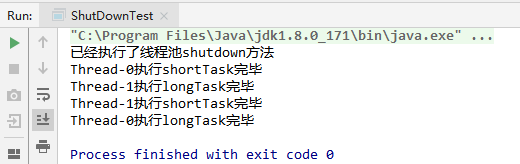
可以看到，虽然在任务都被提交后马上执行了shutdown方法，但是并不会马上关闭线程池，而是等待所有被提交的任务都执行完了才关闭。
shutdownNow例子：
1 | public static void main(String[] args) { |
启动程序，控制台输出如下： 
可以看到，在执行shutdownNow方法后，线程池马上就被关闭了，正在执行中的两个任务被打断，并且返回了线程队列中等待被执行的两个任务。
通过上面两个例子我们还可以看到shutdown和shutdownNow方法都不是阻塞的。常与shutdown搭配的方法有awaitTermination。
awaitTermination方法接收timeout和TimeUnit两个参数，用于设定超时时间及单位。当等待超过设定时间时，会监测ExecutorService是否已经关闭，若关闭则返回true，否则返回false。该方法是阻塞的：
1 | public static void main(String[] args) throws InterruptedException { |
启动程序输出如下：
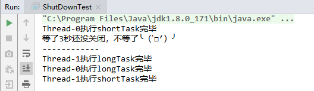
4大拒绝策略
当线程池无法再接收新的任务的时候，可采取如下四种策略： 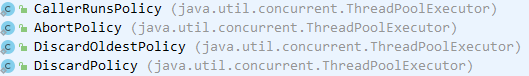
CallerRunsPolicy
CallerRunsPolicy策略：由调用线程处理该任务：
1 | public static void main(String[] args) throws InterruptedException { |
上面的线程池最多只能一次性提交4个任务，第5个任务提交后会被拒绝策略处理。启动程序输出如下：
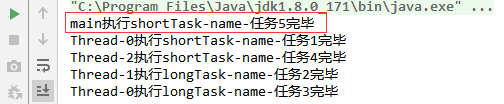
可以看到，第5个提交的任务由调用线程（即main线程）处理该任务。
AbortPolicy
AbortPolicy策略：丢弃任务，并抛出RejectedExecutionException异常。前面的例子就是使用该策略，所以不再演示。
DiscardOldestPolicy
DiscardOldestPolicy策略：丢弃最早被放入到线程队列的任务，将新提交的任务放入到线程队列末端：
1 | public static void main(String[] args) throws InterruptedException { |
启动程序输出如下：
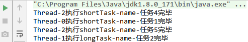
可以看到最后提交的任务被执行了，而第3个任务是第一个被放到线程队列的任务，被丢弃了。
DiscardPolicy
DiscardPolicy策略：直接丢弃新的任务，不抛异常：
1 | public static void main(String[] args) throws InterruptedException { |
启动程序，输出如下： 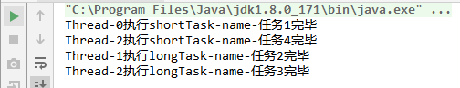
第5个任务直接被拒绝丢弃了，而没有抛出任何异常。
线程池工厂方法
除了使用ThreadPoolExecutor的构造方法创建线程池外，我们也可以使用Executors提供的工厂方法来创建不同类型的线程池：
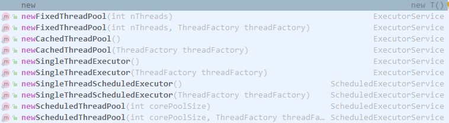
newFixedThreadPool
查看newFixedThreadPool方法源码：
1 | public static ExecutorService newFixedThreadPool(int nThreads) { |
可以看到，通过newFixedThreadPool创建的是一个固定大小的线程池，大小由nThreads参数指定，它具有如下几个特点:
因为corePoolSize和maximumPoolSize的值都为nThreads，所以线程池中线程数量永远等于nThreads，不可能新建除了核心线程数的线程来处理任务，即keepAliveTime实际上在这里是无效的。
LinkedBlockingQueue是一个无界队列（最大长度为Integer.MAX_VALUE），所以这个线程池理论是可以无限的接收新的任务，这就是为什么上面没有指定拒绝策略的原因。
newCachedThreadPool
查看newCachedThreadPool方法源码：
1 | public static ExecutorService newCachedThreadPool() { |
这是一个理论上无限大小的线程池：
核心线程数为0，SynchronousQueue队列是没有长度的队列，所以当有新的任务提交，如果有空闲的还未超时的（最大空闲时间60秒）线程则执行该任务，否则新增一个线程来处理该任务。
因为线程数量没有限制，理论上可以接收无限个新任务，所以这里也没有指定拒绝策略。
newSingleThreadExecutor
查看newSingleThreadExecutor源码：
1 | public static ExecutorService newSingleThreadExecutor() { |
核心线程数和最大线程数都为1，每次只能有一个线程处理任务。
LinkedBlockingQueue队列可以接收无限个新任务。
newScheduledThreadPool
查看newScheduledThreadPool源码：
1 | public static ScheduledExecutorService newScheduledThreadPool(int corePoolSize) { |
所以newScheduledThreadPool理论是也是可以接收无限个任务，DelayedWorkQueue也是一个无界队列。
使用newScheduledThreadPool创建的线程池除了可以处理普通的Runnable任务外，它还具有调度的功能：
1.延迟指定时间后执行：
1 | ScheduledExecutorService executorService = Executors.newScheduledThreadPool(1); |
2.按指定的速率执行：
1 | ScheduledExecutorService executorService = Executors.newScheduledThreadPool(1); |
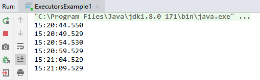
3.按指定的时延执行：
1 | ScheduledExecutorService executorService = Executors.newScheduledThreadPool(1); |
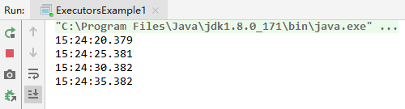
乍一看，scheduleAtFixedRate和scheduleWithFixedDelay没啥区别，实际它们还是有区别的：
scheduleAtFixedRate按照固定速率执行任务，比如每5秒执行一个任务，即使上一个任务没有结束，5秒后也会开始处理新的任务；
scheduleWithFixedDelay按照固定的时延处理任务，比如每延迟5秒执行一个任务，无论上一个任务处理了1秒，1分钟还是1小时，下一个任务总是在上一个任务执行完毕后5秒钟后开始执行。
对于这些线程池工厂方法的使用，阿里巴巴编程规程指出：
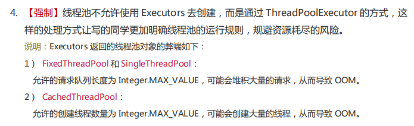
因为这几个线程池理论是都可以接收无限个任务，所以这就有内存溢出的风险。实际上只要我们掌握了ThreadPoolExecutor构造函数7个参数的含义，我们就可以根据不同的业务来创建出符合需求的线程池。一般线程池的创建可以参考如下规则：
IO密集型任务，线程池线程数量可以设置为2 X CPU核心数；
计算密集型任务，线程池线程数量可以设置为CPU核心数 + 1。